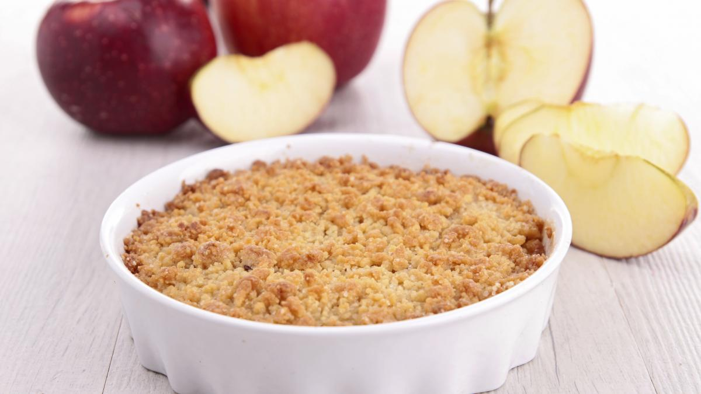

Crumble

Crumble, usually with fruit, also called croustade in Canada,
is a British dessert consisting of a layer of fruit in the bottom of the dish,
and a layer of crumbly-looking pastry, also called breadcrumbs.
Ingredients
- 150 g wheat flour
- 125 g soft butter (take it out 1/2 hour before starting the recipe)
- 1 sachet vanilla sugar
- 6 apples (Canada apples, for example)
- 150 g brown sugar
- 1 teaspoon powdered cinnamon
- lemon
Steps
- Preheat the oven to 210°C (thermostat 7).
- Peel, core and cut the apples into coarse cubes, place them in a baking dish.
- Drizzle with lemon juice and sprinkle with cinnamon and vanilla sugar.
- In a salad bowl , mix the flour and brown sugar.
Then add the butter in small cubes and mix by hand to form a lumpy dough.
- Crumble this dough over the apples so as to cover them.
- Bake for 30 minutes.
- Serve warm with whipped cream or vanilla ice cream.